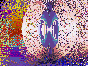
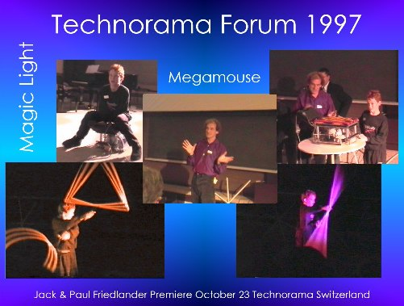
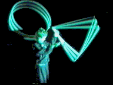

Switzerlands leading science museum, Technorama, recently hosted an event featuring the combined talents and inventions of Paul Friedlander and his son Jack Friedlander. The show included the world premiere of Megamouse, the mouse so large you have to sit on it and push it round with your legs. The finale was the premiere of Magic Light, a performance which turns after images into light sculptures.
AbsurdI began the evening with a tour of my website. Next I invited Jack to join me on stage. We presented our invention, Megamouse and explained how it works. A football substitutes for the mouse ball with meccano wheels holding it in place under the seat. There is also a standard serial mouse inside Megamouse. It has been carefully modified with thin rods directly attached to the axles of the encoder wheels. The rods come out through holes cut in the body of the mouse and connect to the meccano wheels. Extra wires have been added onto the mouse buttons and connected to an oversize set of buttons mounted on a lunch box bolted to the front of the Megamouse. The weight of the users is supported by a heavy duty set of furniture castors. A firm contract carpet makes a perfect mouse mat. It has a plexiglas housing so you can see how it all works.
Relaxing
Stimulating
Good for wheel chair users?
Good for business men needing another way to query their databases?
Good for Science Centers?
Pictures were drawn with Megamouse: first a simple image to prove it really works and then it was used to control Zip Art, the software that lets you generate complex fractal like patterns with a single mouse movement. The images were projected with a video beam onto a screen high over the performance area.



VisionaryMagic Light is a human powered light sculpture. It combines Paul Friedlander's chromastrobic light with Jack's circus skills to produce a performance of whirling sticks, hoops and other forms which create multi colored trails of light floating in the air. The animation is slow and jerky, when you see this in real life, Jack is moving so fast the after images of the shapes completely surround him. The show was accompanied by electronic music composed by Jack and now playing on this web page if you have Koan plug in.
Illusive
Energizing

Home Page | Zip Art | Gallery Guide | Art Background